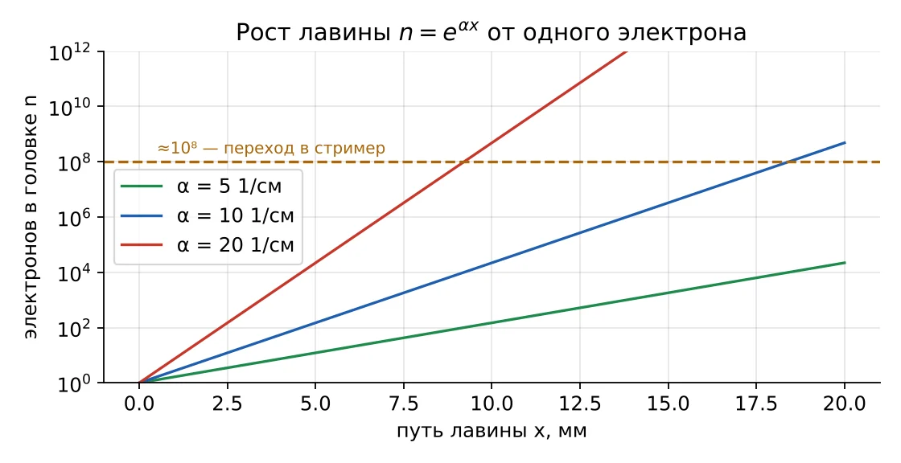
Техника высоких напряжений · лекция 2
Откуда в изоляторе берутся заряды, как они размножаются и когда разряд начинает поддерживать себя сам
13.03.02 · интерактив «Ионизация и электронная лавина» · по учебнику Важова и Лавриновича, разд. 1.1
Цели лекции
1
Назвать виды ионизации и эмиссии и условие каждой
2
Оценить энергию электрона на пробеге и рассчитать α
3
Посчитать электроны и ионы в лавине
4
Проверить условие самостоятельности разряда
5
Получить из него закон Пашена
6
Объяснить влияние давления, высоты и газа
Вопрос в аудиторию
И почему промежуток держит 30 кВ, а при 36 кВ пробивается — что меняется на этих 6 киловольтах?
1 · Атом и энергия
Возбуждённый атом через ≈ 10⁻⁸ с возвращается и излучает фотон. При ионизации рождаются два свободных заряда: электрон и положительный ион.
1 эВ — энергия заряда e, прошедшего 1 В. Если E в В/м, а путь в м, их произведение — сразу энергия в эВ.
| Газ | Возбуждение, эВ | Ионизация, эВ |
|---|---|---|
| N₂ | 6,1 | 15,5 |
| O₂ | 7,9 | 12,5 |
| H₂O | 7,6 | 12,7 |
| Ar | 11,5 | 15,8 |
| SF₆ | — | 15,6 |
1 · Обратные процессы
e⁻ + A⁺ → A + h·ν
Равновесие с ионизацией задаёт степень ионизации ψ = n/N. Сильно ионизованный газ — плазма: канал искры, дуги.
e⁻ + O₂ → O₂⁻
Электроотрицательные газы — O₂, H₂O, SF₆ — захватывают электроны. Тяжёлый ион не ионизует. Коэффициент η, 1/см.
2 · Объёмная ионизация
e·E·λ ≥ Wи
Главный механизм лавины
W₁ + W₂ ≥ Wи за ≈10⁻⁸ с
Канал искры и дуги
h·ν ≥ Wи; λ ≤ 1240/Wи нм
Для O₂ — короче 99 нм; основа стримера
T ≈ 5000–20 000 К
Дуга, лидер, канал искры
В интерактиве · вкладка 1
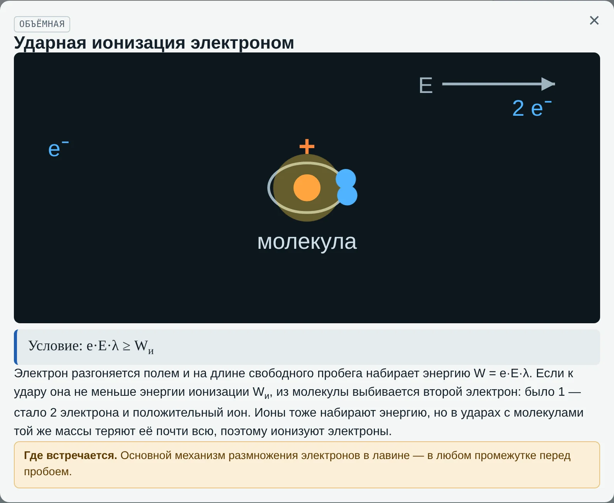
10 карточек: 4 вида объёмной ионизации, 4 вида эмиссии, рекомбинация и прилипание.
Нажатие открывает окно: крупная анимация, условие, объяснение, пример из практики.
Закрыть — крестиком, Esc или щелчком по фону.
3 · Эмиссия с катода
| Вид | Условие | Где встречается |
|---|---|---|
| Ударом иона | mv²/2 ≥ Wвых | Ионы лавины → механизм γ |
| Фотоэмиссия | h·ν ≥ Wвых, λ ≤ 276 нм | УФ-подсветка разрядника |
| Термоэмиссия | j = A·T²·e^(−Wвых/kT) | Пятно дуги на контакте |
| Автоэлектронная | E ≈ 10⁷–10⁸ В/см | Микроострия в вакуумной камере |
Коэффициент γ — сколько электронов выбивает с катода один ион лавины. Всегда γ ≪ 1: обычно 10⁻⁴…10⁻¹.
4 · Длина свободного пробега
λ = 1/Z ∝ T/p
λ = 1/(A·p)
Воздух при 760 мм рт. ст.: λ ≈ 0,88 мкм. В горах длиннее, в сжатом газе короче.
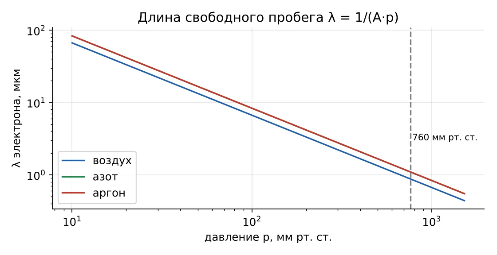
4 · Энергия на пробеге
2,6
эВ — набирает электрон при 30 кВ/см
≪
12,5
эВ — нужно для ионизации O₂
Ионизуют только «счастливчики», пролетевшие без удара в несколько раз дольше среднего.
5 · Вероятность ионизации
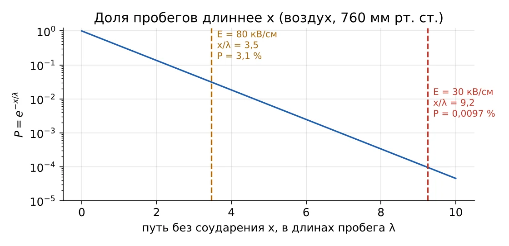
P = e^(−x/λ)
xи = Wи/(e·E)
Доля ионизирующих ударов: e^(−Wи/(eEλ))
5 · Коэффициент ударной ионизации
α = (1/λ)·e^(−Wи/(eEλ)) → α/p = A·e^(−B·p/E)
Главное: α/p зависит только от E/p — приведённая напряжённость, параметр подобия.
| Газ | A, 1/(см·мм рт. ст.) | B, В/(см·мм рт. ст.) | E/p, диапазон |
|---|---|---|---|
| Воздух | 15 | 365 | 100–800 |
| Азот | 12 | 342 | 100–600 |
| Аргон | 12 | 180 | 100–600 |
5 · α для воздуха
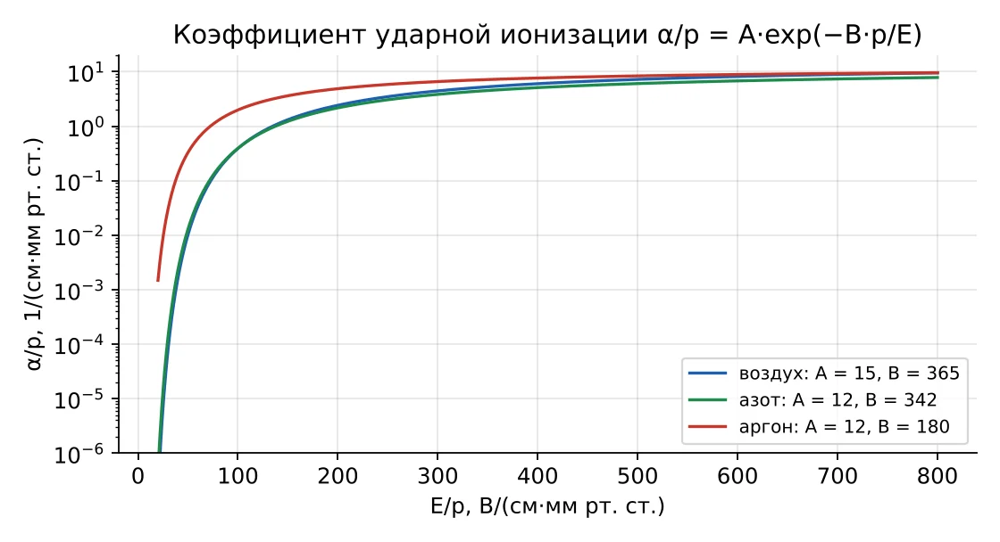
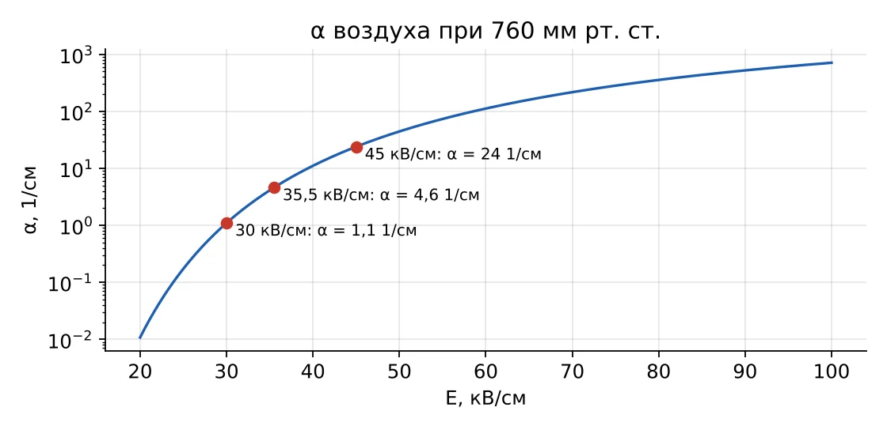
30 кВ/см → α ≈ 1,1 · 35,5 кВ/см → 4,6 · 45 кВ/см → 24 1/см
5 · Эффективная энергия ионизации
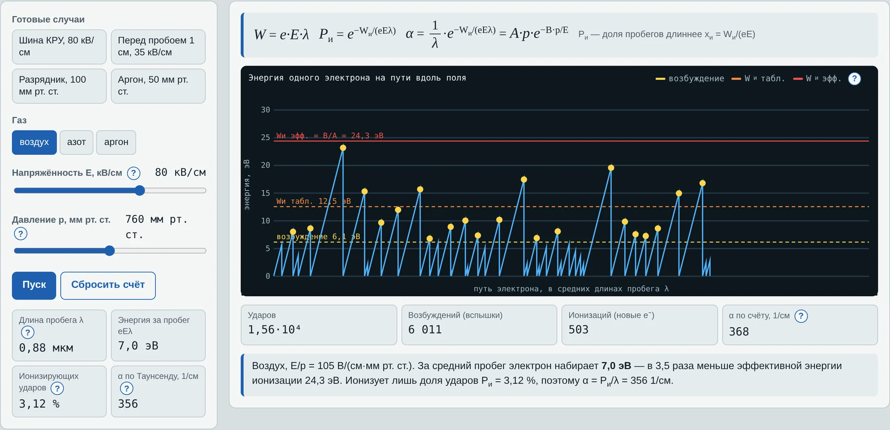
Электрон тратит энергию на возбуждение и колебания молекул — поэтому в модели «удар — потеря всей энергии» порог равен B/A.
В интерактиве · вкладка 2
За пробег 7 эВ, ионизирует 3 % ударов, α ≈ 360 1/см
Ионизаций почти нет, α ≈ 4,6 1/см — и этого хватает на пробой
Пробег 6,7 мкм — ионизаций много: давление решает
Часть 2
Один электрон, сильное поле — и через сантиметр их сто миллионов
6 · Рост лавины
dn = α·n·dx
n = n₀·e^(αx)
с прилипанием: n₀·e^((α−η)x)
α = 10 1/см, x = 1,5 см → e¹⁵ ≈ 3,3 млн электронов
6 · Где лежат ионы
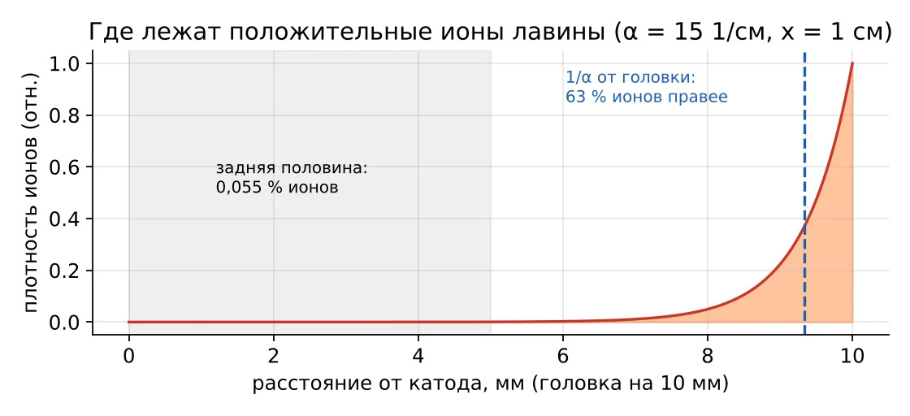
63 %
ионов — в последних 1/α
1/α
центр ионов позади головки
0,055 %
в задней половине при αx = 15
6 · Поле головки и стример
r ≈ √(4·(D/μ)·x/E)
Eq = e·n/(4πε₀r²)
Когда Eq ≈ E (n ≈ 10⁸), фотоионизация перед головкой рождает стример — лекция 3.
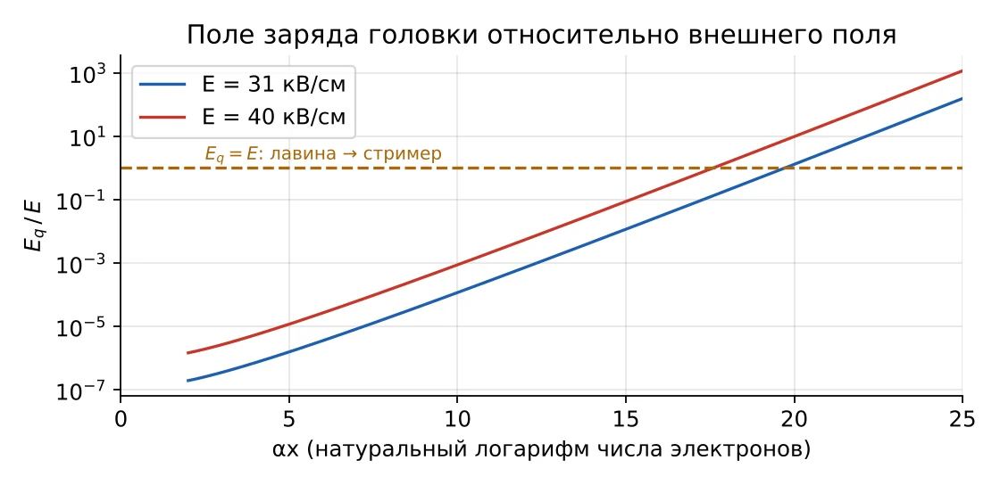
В интерактиве · вкладка 3
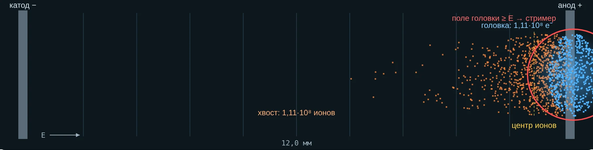
| Воздух, 42 кВ/см, 12 мм | Значение | Величина | Значение |
|---|---|---|---|
| α, 1/см | 15,4 | Ионов в задней половине | < 0,01 % |
| Электронов в головке | 1,1·10⁸ | Поле головки | 139 кВ/см |
| Ионов у головки (1/α) | 63 % | Критическая длина | 11,2 мм |
6 · Прилипание
Лавина растёт, но медленнее: α = 12, η = 2 → e¹⁰ вместо e¹² — в 7,4 раза меньше
Лавина гаснет. В воздухе — ниже ≈ 24–26 кВ/см (критическая напряжённость)
Очень сильное прилипание — прочность в 2,5–3 раза выше воздуха
Часть 3
Условие самостоятельности, опыт Таунсенда и закон Пашена
7 · Две формы разряда
Новые электроны даёт только внешний ионизатор: ультрафиолет, радиоактивный фон, рентген. Убрали — разряд погас.
Лавина сама рождает новые электроны: фотоны выбивают их из газа и катода, ионы — из катода.
7 · Условие самостоятельности
Лавина оставляет e^((α−η)S) − 1 ионов, каждый выбивает γ электронов:
μ = γ·(e^((α−η)S) − 1) ≥ 1
(α−η)S = ln(1 + 1/γ)
При γ = 0,01: αS = 4,62 — лавина из ~100 электронов.
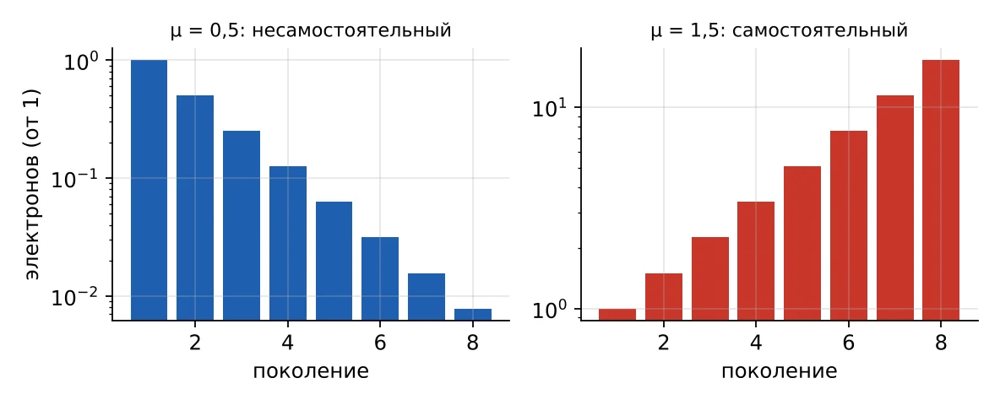
7 · Опыт Таунсенда · вкладка 4
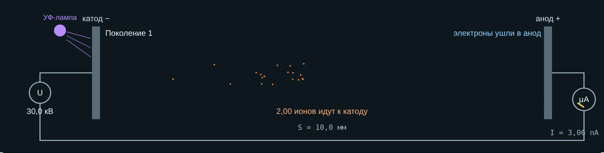
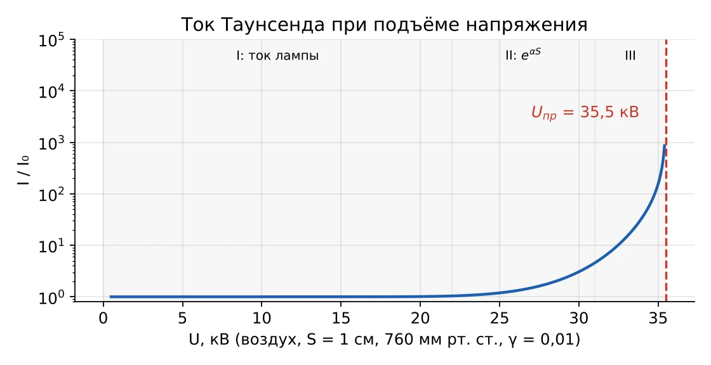
I = I₀·e^(αS)/(1 − μ)
I — ток лампы II — экспонента III — вторичные с катода IV — μ → 1, пробой
8 · Закон Пашена
Uпр = B·p·S / [ln(A·p·S) − ln ln(1 + 1/γ)]
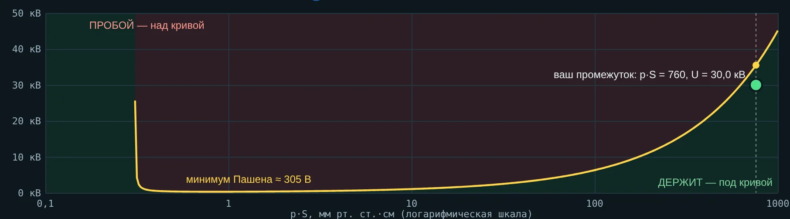
Минимум: (pS)min = e·ln(1+1/γ)/A ≈ 0,84 мм рт. ст.·см, Umin ≈ 305 В
Справа — мало энергии на пробеге; слева — слишком мало ударов
8 · Числа для воздуха
| S, см (760) | Uпр, кВ | Eпр, кВ/см |
|---|---|---|
| 0,1 | 5,0 | 50,3 |
| 0,5 | 19,5 | 39,0 |
| 1 | 35,5 | 35,5 |
| 2 | 65,2 | 32,6 |
| 3 | 93,3 | 31,1 |
| Высота, м | p, мм рт. ст. | Uпр 1 см, кВ |
|---|---|---|
| 0 | 760 | 35,5 |
| 1000 | 673 | 31,9 |
| 2000 | 595 | 28,7 |
| 3000 | 526 | 25,8 |
| 4000 | 465 | 23,2 |
9 · Внешние условия
| Фактор | Физика | Практика |
|---|---|---|
| Давление ↓ | λ растёт, Uпр падает почти ∝ p | Высокогорные ПС, утечка элегаза |
| Температура ↑ | Плотность газа ↓ | Приведение к нормальным условиям |
| Влажность | η ↑, но конденсат на поверхности | Подогрев ячеек КРУ |
| Газ | Другие A, B, η | SF₆ в 2,5–3 раза прочнее воздуха |
| Катод, облучение | γ и начальные электроны | УФ-подсветка разрядников |
| Глубокий вакуум | Левая ветвь Пашена | Вакуумные выключатели |
Реальный случай 1 · 19 сентября 2023
Ракета Electron (Rocket Lab): через ≈ 151 с вторая ступень потеряла питание — дуга в высоковольтном источнике замкнула батареи. Совпали пульсации напряжения, гелий и азот в отсеке и скрытый дефект изоляции.
С высотой p·S падает — рабочая точка уходит к минимуму Пашена, где пробой возможен от сотен вольт. Компания сослалась на закон Пашена и сделала отсек герметичным с поддерживаемым давлением.
Реальный случай 2 · 28 декабря 2022, Канада
Выключатель 138 кВ был в блокировке по низкому давлению SF₆: сигнал за 6 дней не отработали. Мороз до −34 °C, КЗ длилось ≈ 165 с, трансформатор повреждён.
87 psi при 20 °C → при −34 °C: 87·239/293 ≈ 71 psi — ниже порога блокировки 72 psi от одного охлаждения. Поэтому контролируют плотность с термокомпенсацией.
Реальный случай 3 · вакуумные выключатели
Камеры делают при 10⁻⁴–10⁻⁵ Па, со временем они понемногу теряют вакуум. При ≈ 10⁻¹ Па камера перестаёт выдерживать испытание и может отказать внезапно.
Глубокий вакуум — далеко левее минимума Пашена. Метод MAC зажигает разряд Пеннинга: ток ионизации ∝ давлению — прямое применение ударной ионизации.
Практика · вкладка 5 и пособие студента
1. Энергия на пробеге у шины КРУ
2. Путь до ионизации O₂
3. Фотоны от короны ВЛ
4. Электроны в головке лавины
5. Сырой рудник и прилипание
6. Порог самостоятельности
7. Подстанция в горах
8. Ток с ультрафиолетом
9. Где лавина станет стримером
Итог
1. Почему при 30 кВ/см воздух не пробивается?
5. Что будет, если η > α?
2. Чем α отличается от γ?
6. Как из условия самостоятельности получить закон Пашена?
3. Почему ионы лавины почти неподвижны?
7. Почему у кривой Пашена есть минимум?
4. Где в лавине лежат почти все ионы?
8. Почему вакуум — хороший изолятор?
Главное
Ионизуют редкие электроны с длинным пробегом: α = A·p·e^(−Bp/E)
Лавина растёт как e^(αx); ионы — у головки; при αx ≈ 20 она становится стримером
Пробой — когда γ·(e^(αS) − 1) ≥ 1; отсюда закон Пашена
Дома: задачи 1–5 вкладки «Задачи», тест — вкладка 6. Следующая лекция — стример, лидер, искра